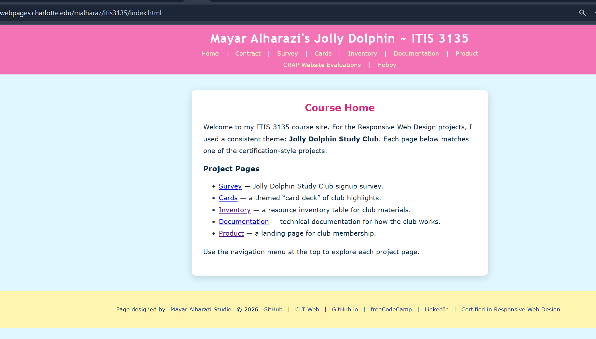

Peer Review
This page contains a peer evaluation for a classmate's Client Project Part 2 website progress.
Student Evaluated
Name: Alharazi, Mayar
Website Reviewed

Evaluation
- Checklist: I was not able to locate the Client Project Pt. 2 page from the main site navigation.
- Checklist: Because I could not find the required project page, I could not fully evaluate the assignment progress.
- Requirements: The project appears to include the expected content and structure so far.
- Requirements: The site shows steady progress toward the final project goals.
- Good: The strongest part of the site is the color scheme, it's very aesthetically pleasing.
- Suggestion: One improvement would be to add a clearly labeled Client Project link on the homepage or course navigation.
- Continue: The student should continue to work on their Client Project.
Email Confirmation
I emailed the link to this review page to the person I evaluated.
Harsh Bhatewara
April 19, 2026